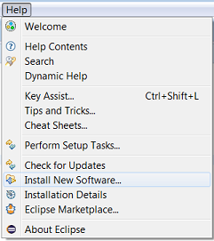
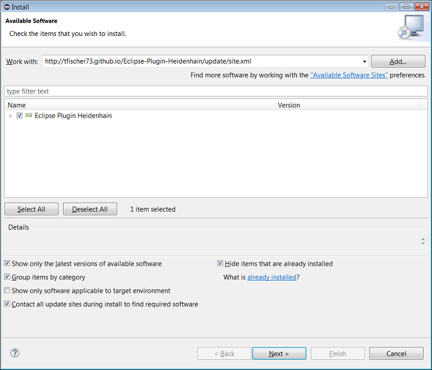

Installation mit Eclipse
Eclipse StartenMenü Help --> Install New Software

Im nun geöffneten Dialog unter "Work with" folgenden Link Eintragen
http://tfischer73.github.io/Eclipse-Plugin-Heidenhain/update/site.xml
"Eclipse Plugin Heidenhain" anwählen
Nun über die Schaltfläche "Next >" die Installation starten und den Anweisungen folgen.
Installation ohne Hilfe von Eclipse
Plugin auf dem PC speichernDas Plugin in das Plugins-Verzeichnis von Eclipse kopieren
Beim nächsten start von Eclipse wird das Plugin geladen